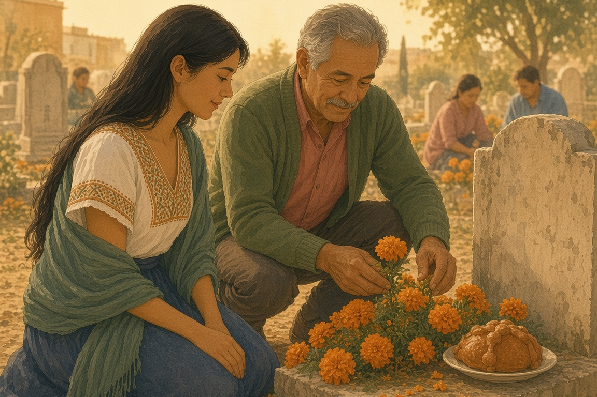

- A2
- El Día de Muertos
Flores y pan para los abuelos
El 2 de noviembre, la mesa de Valeria no es de miedo: es una visita.
Texto
El 2 de noviembre fui a casa de mi amiga Valeria, en México. En la sala vi una mesa especial: flores naranjas, velas, un vaso de agua, pan dulce y una foto de sus abuelos. Valeria dijo: «Es la ofrenda. Hoy es el Día de Muertos».
En Estados Unidos hay Halloween, pero esta fiesta es distinta. No es una noche de miedo. Es una visita. En México, el 1 de noviembre las familias recuerdan a los niños, y el 2, a los adultos. Ponen la comida favorita de la persona, flores de cempasúchil y pan de muerto. El color y el aroma, dicen, ayudan a encontrar el camino a casa.
Por la tarde fuimos al cementerio. Vimos a muchas familias. Conversaron, pusieron flores y compartieron pan. Valeria habló con sus abuelos en voz baja y después sonrió. «No vienen a asustarnos —dijo—. Vienen a la mesa, como antes.» A mí me gustó esa idea. El mes que viene no voy a estar en México, pero voy a mirar una foto de mi familia y voy a recordar: a veces, querer a una persona es dejarle un lugar en la mesa.
